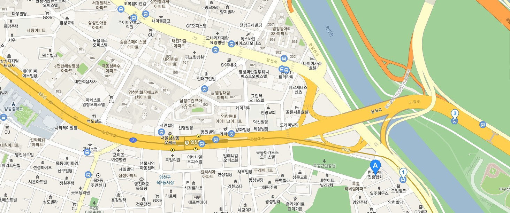

장소 검색

평가위원의 소속을 검색 하실 수 있는 영역입니다.
시/도
기시/도관명
시/도
서울특별시
부산광역시
대구광역시
인천광역시
광주광역시
대전광역시
울산광역시
경기도
강원도
충청북도
충청남도
전라북도
전라남도
경상북도
경상남도
제주특별자치도
세종특별자치시
구/군
구/군
구/군
장소명
장소명
검색
장소 목록
총
1건
이 검색되었습니다.
장소에 관련된 정보를 확인 하실수 있습니다.
선택
시/도
구/군
장소명
서울특별시
서대문구 연세로 50
연세대학교
등록
취소
닫기